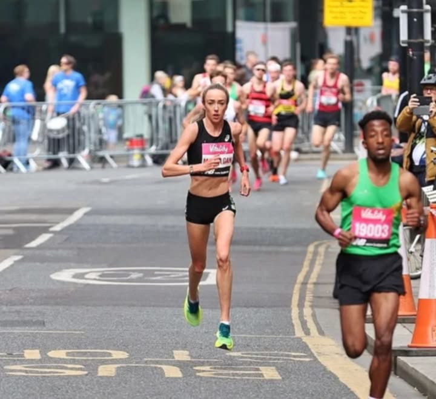

Annual National Marathon 2024
The Annual National Marathon is back! Runners from across the country will come together to compete in this exciting race that tests endurance, strength, and determination. Whether you're a professional athlete or a casual runner, this event is for everyone.
Event Details
- Date: March 10, 2024
- Start Time: 6:00 AM
- Location: City Central Park, Downtown Avenue
- Distance: Full Marathon (42.195 km), Half Marathon (21 km), and Fun Run (5 km)
Prizes
Exciting prizes await top finishers in all categories:
- 1st Place: 10,000 + Trophy
- 2nd Place: 5,000 + Medal
- 3rd Place: 2,500 + Medal
Registration Information
Secure your spot by registering early, in our covered court gymnasium. Limited slots are available!
- Early Registration: Until January 31, 2024 (50)
- Regular Registration: February 1 - February 29, 2024 (75)
- On-the-Spot Registration: March 1-9, 2024 (100)
Register Now
Highlights
This year's event will include:
- Special guest appearance by Olympic gold medalist John Doe
- Live music and food trucks at the finish line
- Charity fundraiser supporting local community programs
Back to Sports